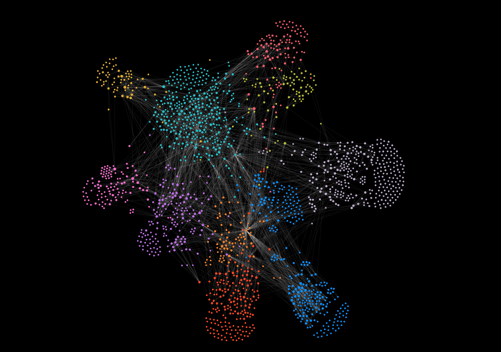

Tools: D3.js, PIXI.js, Javascript
In this blog post, we will explore how to create a force-directed graph using the latest versions of two libraries: PIXI.js v7 and D3 v7. By combining the rendering capabilities of PIXI.js with the force simulation abilities of D3.js, particularly the d3-force module, you can build performant force-directed graphs for your web applications.
PIXI.js leverages hardware acceleration through WebGL, making it well-suited for rendering data visualizations that involve a significant amount of data points, interactivity or real-time updates. Similar to D3.js, PIXI.js gives you great control over the graphical elements to create custom visual effects and styles.
This is the first article of a three-part series delving deep into the creation of a suite of features or functionality associated with interactive and filterable graphs not meant just to present connections, but also to hopefully encourage data exploration as a graph analytical tool.
Readers should have some experience with D3.js and the d3-force module. Basic knowledge of PIXI.js is useful but not required. I will start off with the webpage setup and data processing work. To skip to the beginning of the PIXI.js section, click HERE
Before diving into the implementation, let's set up a basic project structure. You can create a directory for your project and include the necessary libraries.
1. Create an index.html file containing a DIV element to render the graph in.
2. Initialize your project and install PIXI.js and D3 using npm.
npm init
npm install pixi.js pixi-viewport d3
3. Create a Javascript file to write code to generate the force-directed graph. Import the installed modules.
import * as PIXI from "pixi.js";
import { Viewport } from "pixi-viewport";
import * as d3 from "d3";
Ensure you have a separate dataset of nodes and links. d3-force requires the array of nodes to have a property of 'id' and the array of links to have properties 'source' and 'target'. The original properties are appropriately mapped over to fulfill these requirements.
The nodes dataset I have are nodes that are hierachial, meaning that they belong to a parent (SEGMENT) and a higher-level parent (SUBMODULE). Such a structure will be necessary for advanced interactivity with the graph, such as click events to expand parent to child nodes and vice versa.
let nodes = data.nodes.map((d) => {
return {
NAME: d.NAME,
SUBMODULE: d.SUBMODULE, // MUST BE A UNIQUE ID
SUBMODULE_NAME: d["SUBMODULE NAME"], // PREFERABLY A UNIQUE LABEL
SEGMENT: d.SEGMENT, // MUST BE A UNIQUE ID
SEGMENT_NAME: d["SEGMENT NAME"], // PREFERABLY A UNIQUE LABEL
};
});
let links = data.links.map((d) => {
return {
SOURCE: d.SOURCE,
TARGET: d.TARGET
};
});
const N = d3.map(nodes, (d) => d['NAME'])
const LS = d3.map(links, (d) => d['SOURCE'])
const LT = d3.map(links, (d) => d['TARGET'])
nodes = d3.map(nodes, (d, i) => ({ id: N[i], ...d }));
links = d3.map(links, (_, i) => ({
source: LS[i],
target: LT[i],
}));
// Further code to create style properties an assign to data can be written here
const nodeRadiusScale = d3
.scaleSqrt()
.domain([0, d3.max(Object.values(nodeDegrees))])
.range([nodeRadius, nodeRadius * 5])
.clamp(true);
for (let i = 0; i < showEle.nodes.length; i++) {
let node = showEle.nodes[i];
node.color = colorScale(node.group);
node.radius = nodeRadiusScale(node.degree);
}
const simulation = d3
.forceSimulation()
.force(
"link",
d3.forceLink().id((d) => d.id)
)
.force(
"x",
d3.forceX((d) => d.x)
)
.force(
"y",
d3.forceY((d) => d.y)
)
.force(
"charge",
d3.forceManyBody().strength(-100).distanceMin(100)
);
.force(
"collide",
d3.forceCollide().radius((d) => d.radius)
)
API documentation: PIXI.Application
In PIXI v7, the property to set background transparency has been replaced from backgroundAlpha to transparent
A comparison of the same code logic in D3.js is shown beside all PIXI code snippets.
PIXI.js
const width = window.innerWidth
const height = window.innerHeight
const app = new PIXI.Application({
width,
height,
resolution: 2,
transparent: true,
antialias: true,
autoDensity: true,
autoStart: true,
});
document.querySelector('#app').appendChild(app.view);
D3.js
const svg = d3
.select("#app")
.append("svg")
.attr("width", width)
.attr("height", height)
.attr("viewBox", [-width / 2, -height / 2, width, height]);
API documentation: pixi-viewport
Add the viewport to the stage, then easily enable zoom on mousewheel and pan functionality upon dragging of canvas by activating the plugins. minScale and maxScale sets limits to the zoom scale. How to programme further actions to graph elements upon zoom will be explained in another article.
It is necessary to center the viewport at coordinates (0,0) because unless specified otherwise, the force simulation will render the graph with start coordinates at (0,0) and we want the graph to appear centralized on the browser screen.
In PIXI v7, the interaction module has been replaced from app.renderer.plugins.interaction to app.renderer.events
PIXI.js
const viewport = new Viewport({
screenWidth: width,
screenHeight: height,
worldWidth: width,
worldHeight: height,
events: app.renderer.events,
});
app.stage.addChild(viewport);
viewport.center = new PIXI.Point(0, 0);
viewport
.drag().pinch().wheel().decelerate()
.clampZoom({ minScale: 0.2, maxScale: 5 });
D3.js
const g = svg.append("g");
svg.attr("viewBox", [-width / 2, -height / 2, width, height])
const zoomHandler = d3.zoom().on("zoom", function (event) {
g.attr("transform", event.transform);
});
svg.call(zoomHandler);
API documentation: PIXI.Container
Create a container each for the nodes, labels and links. Similar to SVG group elements, the ordering of containers is important as a PIXI Container initialized later gets rendered above the PIXI Container initialized before it.
PIXI.js
const linksLayer = new PIXI.Container();
viewport.addChild(linksLayer);
const nodesLayer = new PIXI.Container();
viewport.addChild(nodesLayer);
const labelsLayer = new PIXI.Container();
viewport.addChild(labelsLayer);
D3.js
const linkG = g.append("g").attr("class", "links");
const nodeG = g.append("g").attr("class", "nodes");
const textG = g.append("g").attr("class", "labels");
One of the core features and benefits of D3.js is the ability to bind data to elements in the Document Object Model (DOM). With PIXI.js, to make up for the lack of this feature, we can create these WeakMap objects to externally establish a mapping between various data elements and their corresponding PIXI graphical representations.
nodeDataToNodeGfx maps data elements to their graphical representations, and nodeGfxToNodeData maps graphical elements back to their corresponding data.This bidirectional mapping allows us to easily update the visual attributes of nodes based on changes in the data and vice versa.
This tecnnique was introduced by Jan Žák. I came across it 3 years ago in this observable notebook he created.
let nodeDataToNodeGfx = new WeakMap();
let nodeGfxToNodeData = new WeakMap();
let nodeDataToLabelGfx = new WeakMap();
let labelGfxToNodeData = new WeakMap();
let linkDataToLinkGfx = new WeakMap();
let linkGfxToLinkData = new WeakMap();
I will compare rendering with D3.js and with PIXI.js. There are alternative methods with PIXI.js to create and render the elements, but I feel the one I describe in the sections below should be the default way since it is the most performant and scalable.
Performance Tip: Minimize the Number of PIXI Graphics Object Guide on PIXI.js website
While PIXI.js is fast, when rendering a large dataset in PIXI.js, it's crucial to optimize performance. Instead of creating individual PIXI Graphics objects for each data point, consider converting the graphic into a texture. By using textures within PIXI Sprites, you can significantly enhance rendering speed and efficiency.
What happens if the nodes are of various sizes? Set a fixed size to the graphic object, then make use of the width and height property of a PIXI Sprite to scale accordingly.
Scalable as an updateable graph
Best practice dictates anticipating the potential for a dynamic graph, where the graph's data may require future updates. To ensure maintainability, it's advisable to encapsulate all code that needs to be re-executed upon updates, such as redrawing graph elements, within a dedicated function, which I name here as update
const circleGraphics = new PIXI.Graphics();
circleGraphics.beginFill(nodeFill);
circleGraphics.lineStyle(nodeStrokeWidth, nodeStroke, nodeStrokeOpacity);
circleGraphics.drawCircle(0, 0, nodeRadius * 2);
const circleTexture = app.renderer.generateTexture(circleGraphics, {
resolution: 2,
});
update();
API documentation: PIXI.Graphics
const circleGraphics = new PIXI.Graphics();
circleGraphics.beginFill(nodeFill);
circleGraphics.lineStyle(nodeStrokeWidth, nodeStroke, nodeStrokeOpacity);
circleGraphics.drawCircle(0, 0, nodeRadius * 2);
const circleTexture = app.renderer.generateTexture(circleGraphics, { resolution: 2 });
PIXI.js
// Inside the update function
let linkDataGfxPairs = [];
for (let i = 0; i < nodes.length; i++) {
let nodeData = nodes[i];
let nodeGfx = new PIXI.Container();
nodeGfx.name = nodeData.id;
nodeGfx.cursor = "pointer";
nodeGfx.hitArea = new PIXI.Circle(0, 0, nodeData.radius + 2);
nodeGfx.eventMode = "static";
nodeGfx.alpha = 1;
const circle = new PIXI.Sprite(circleTexture);
circle.name = "CIRCLE";
circle.x = -nodeData.radius;
circle.y = -nodeData.radius;
circle.tint = nodeData.color;
circle.alpha = nodeFillOpacity;
circle.width = nodeData.radius * 2;
circle.height = nodeData.radius * 2;
nodeGfx.addChild(circle);
nodesLayer.addChild(nodeGfx);
let labelGfx = new PIXI.Container();
labelGfx.visible = true;
const textStyle = new PIXI.TextStyle({
fontSize: nodeData.radius * 2,
align: "left",
fill: labelColor,
stroke: "black",
strokeThickness: 6,
});
const label = new PIXI.Text(nodeData.NAME, textStyle);
label.name = "LABEL";
label.x = nodeData.radius + 3; // position label next to node without overlap
label.y = -nodeData.radius;
label.resolution = 2;
label.scale.set(0.5);
labelGfx.addChild(label);
labelsLayer.addChild(labelGfx);
nodeDataGfxPairs.push([nodeData, nodeGfx, labelGfx]);
}
D3.js
const updatedNode = nodeG
.selectAll(".node")
.data(nodes, (d) => d.id);
updatedNode.join(
(enter) => {
const newNode = enter
.append("g")
.attr("class", "node")
.attr("pointer-events", "auto")
.attr("cursor", "pointer")
.attr("opacity", 1)
newNode
.append("circle")
.attr("fill", (d) => d.color)
.attr("stroke", nodeStroke)
.attr("r", (d) => d.radius)
.attr("fill-opacity", nodeFillOpacity)
.attr("stroke-opacity", nodeStrokeOpacity)
.attr("stroke-width", nodeStrokeWidth);
return newNode;
},
(update) => update,
(exit) => exit.remove(),
);
const updatedText = textG
.selectAll(".label")
.data(nodes, (d) => d.id);
updatedText.join(
(enter) => {
const newText = enter
.append("g")
.attr("class", "label")
.attr("visibility", 'visible');
newText
.append("text")
.attr("x", (d) => d.radius + 3)
.attr("dominant-baseline", "middle")
.attr("text-anchor", "start")
.attr("fill", labelColor)
.attr("stroke", "black")
.attr("stroke-width", 3)
.attr("font-size", (d) => d.radius)
.text((d) => d.NAME);
return newText;
},
(update) => update,
(exit) => exit.remove(),
);
API documentation: PIXI.Sprite
nodeGfx.name = nodeData.id;
nodeGfx.cursor = "pointer";
nodeGfx.hitArea = new PIXI.Circle(0, 0, nodeData.radius + 2);
nodeGfx.eventMode = "static";
nodeGfx.alpha = 1;
const circle = new PIXI.Sprite(circleTexture);
circle.x = -nodeData.radius;
circle.y = -nodeData.radius;
circle.tint = nodeData.color
circle.width = nodeData.radius * 2;
circle.height = nodeData.radius * 2;
nodeGfx.addChild(circle);
nodesLayer.addChild(nodeGfx);
Bonus: Visualize directionality
Arrows help to convey direction and flow between links from source to target nodes. With PIXI, they can be created as a triangle graphic, which will be positioned at the end of the line where you want to indicate direction.
// before update() is triggered
const triangle = new PIXI.Graphics();
let triangleWidth = 12;
triangle.beginFill(linkStroke, 1);
triangle.lineStyle(0, linkStroke, 1);
triangle.moveTo(-triangleWidth, 0);
triangle.lineTo(triangleWidth, triangleWidth);
triangle.lineTo(triangleWidth, -triangleWidth);
triangle.endFill();
const triangleTexture = app.renderer.generateTexture(triangle, {
resolution: 2,
});
There is no need to assign positions to the nodes and links now because they are undefined and will be calculated by the force simulation later on.
linkGfx.pivot.set(0, lineSize / 2)
PIXI.js
let linkDataGfxPairs = [];
for (let i = 0; i < links.length; i++) {
let linkData = links[i];
const lineSize = linkData.linkStrokeWidth;
const linkGfx = new PIXI.Container();
linkGfx.name = getSourceId(linkData) + "-" + getTargetId(linkData);
linkGfx.pivot.set(0, lineSize / 2);
linkGfx.alpha = linkStrokeOpacity;
const line = new PIXI.Sprite(PIXI.Texture.WHITE);
line.name = "LINE";
line.x = 0;
line.y = -lineSize / 2;
line.height = lineSize;
linkGfx.addChild(line);
const arrow = new PIXI.Sprite(triangleTexture);
arrow.name = "ARROW";
arrow.x = 0;
arrow.y = -3;
arrow.width = 6;
arrow.height = 6;
arrow.alpha = 0;
linkGfx.addChild(arrow);
linksLayer.addChild(linkGfx);
linkDataGfxPairs.push([linkData, linkGfx]);
}
D3.js
const link = linkG
.selectAll("path.link")
.data(links)
.join(
(enter) =>
enter
.append("path")
.attr("class", "link")
.attr("id", (d) => d.source.id + "_" + d.target.id),
(update) => update,
(exit) => exit.remove(),
)
.attr("stroke", linkStroke)
.attr("stroke-width", linkStrokeWidth)
.attr("opacity", linkStrokeOpacity)
.attr("d", (d) => generatePath(d));
// Arrowheads
svg
.append("defs")
.append("marker")
.attr("id", "arrowhead")
.attr("viewBox", "-0 -6 12 12")
.attr("refX", 0)
.attr("refY", 0)
.attr("orient", "auto")
.attr("markerWidth", 6)
.attr("markerHeight", 6)
.attr("xoverflow", "visible")
.append("svg:path")
.attr("d", "M 0,-6 L 12 ,0 L 0,6")
.attr("fill", linkStroke)
.style("stroke", "none");
linkG.selectAll("path.link").attr("marker-mid", "url(#arrowhead)");
nodeDataToNodeGfx = new WeakMap(nodeDataGfxPairs.map(([nodeData, nodeGfx, labelGfx]) => [nodeData, nodeGfx]));
nodeGfxToNodeData = new WeakMap(nodeDataGfxPairs.map(([nodeData, nodeGfx, labelGfx]) => [nodeGfx, nodeData]));
nodeDataToLabelGfx = new WeakMap(nodeDataGfxPairs.map(([nodeData, nodeGfx, labelGfx]) => [nodeData, labelGfx]));
labelGfxToNodeData = new WeakMap(nodeDataGfxPairs.map(([nodeData, nodeGfx, labelGfx]) => [labelGfx, nodeData]));
linkDataToLinkGfx = new WeakMap(linkDataGfxPairs.map(([linkData, linkGfx]) => [linkData, linkGfx]));
linkGfxToLinkData = new WeakMap(linkDataGfxPairs.map(([linkData, linkGfx]) => [linkGfx, linkData]));
nodes(nodes) is a method that associates an array of nodes with the simulation. This means that the force simulation will operate on the provided nodes.
force("link") is used to specify a force named "link", used to simulate the attractive or repulsive forces between linked nodes in a force-directed graph.
links(links) associates an array of links with the "link" force. The force uses these links to calculate and apply the appropriate forces to position the nodes based on the link relationships
simulation.nodes(nodes).force("link").links(links);
alphaTarget(0.5) is used to set the target alpha value for the simulation. In the context of a force simulation, the alpha value represents the simulation's "cooling rate" or how quickly it converges to a stable state.
A higher alpha value (e.g., 1) causes the simulation to converge more quickly but may result in a less stable layout. A lower alpha value (e.g., 0.1) causes the simulation to converge more slowly but can result in a more stable and accurate layout.
After setting the alpha target, calling restart() initiates the simulation, allowing the elements to adjust their positions based on the new target alpha value.
simulation.alphaTarget(0.5).restart();
PIXI.js
function updatePositions() {
for (let i = 0; i < nodes.length; i++) {
let node = nodes[i];
const nodeGfx = nodeDataToNodeGfx.get(node);
const labelGfx = nodeDataToLabelGfx.get(node);
nodeGfx.x = node.x;
nodeGfx.y = node.y;
labelGfx.x = node.x;
labelGfx.y = node.y;
}
for (let i = 0; i < links.length; i++) {
let link = showEle.links[i];
const sourceNodeData = nodes.find((n) => n.id === getTargetId(link));
const targetNodeData = nodes.find((n) => n.id === getSourceId(link));
const linkGfx = linkDataToLinkGfx.get(link);
linkGfx.x = sourceNodeData.x;
linkGfx.y = sourceNodeData.y;
linkGfx.rotation = Math.atan2(targetNodeData.y - sourceNodeData.y, targetNodeData.x - sourceNodeData.x);
const line = linkGfx.getChildByName("LINE");
const lineLength = Math.max(Math.sqrt((targetNodeData.x - sourceNodeData.x) ** 2 + (targetNodeData.y - sourceNodeData.y) ** 2) - targetNodeData.radius, 0);
line.width = lineLength;
}
}
D3.js
function updatePositions() {
link.attr("d", (d) => generatePath(d));
nodeG
.selectAll(".node")
.attr("transform", (d) => `translate(${d.x}, ${d.y})`);
textG
.selectAll(".label")
.attr("transform", (d) => `translate(${d.x}, ${d.y})`);
}
Dynamic
The "tick" event is triggered at regular intervals during the simulation's animation loop. At each "tick," the simulation updates the positions and velocities of the nodes based on the forces applied to them.
Because the starting positions of graph elements are undefined, when you begin a simulation, all nodes are essentially placed at the same starting point, usually at coordinates (0,0) on the screen. The close proximity of nodes at the origin causes them to collide with each other as soon as the simulation begins. Nodes exert forces on each other. As nodes experience these forces, they appear to "jump around" or jitter on the screen, attempting to find equilibrium. This jittering is a result of the dynamic nature of the simulation, where forces like repulsion and attraction cause nodes to continually adjust their positions.
Eventually, nodes gradually settle into their final positions, but depending on the alphaTarget value, the speed at which it reaches an equilibrium varies.
Static
Run updatePositions function once only.
I strongly favor this approach because the initial erratic movement of nodes serves little purpose. This not only detracts from the visual experience but can also introduce animation lag in the case of large-scale graphs. To refresh and realign element positions, reheat the simulation whenever the update function is triggered.
Math.ceil(Math.log(simulation.alphaMin()) / Math.log(1 - simulation.alphaDecay()));
This line of code determines the number of iterations needed for a D3.js force simulation to reach or approach its minimum alpha value. This calculation takes into account the minimum alpha value, the alpha decay rate, and the cooling process of the simulation. The result of this calculation is then passed as an argument to the tick method to advance the simulation by that number of iterations. This is often used to ensure that the simulation runs long enough to stabilize the layout of the graph.
simulation.on("tick", () => updatePositions())
simulation.tick(Math.ceil(Math.log(simulation.alphaMin()) / Math.log(1 - simulation.alphaDecay())));
updatePositions();